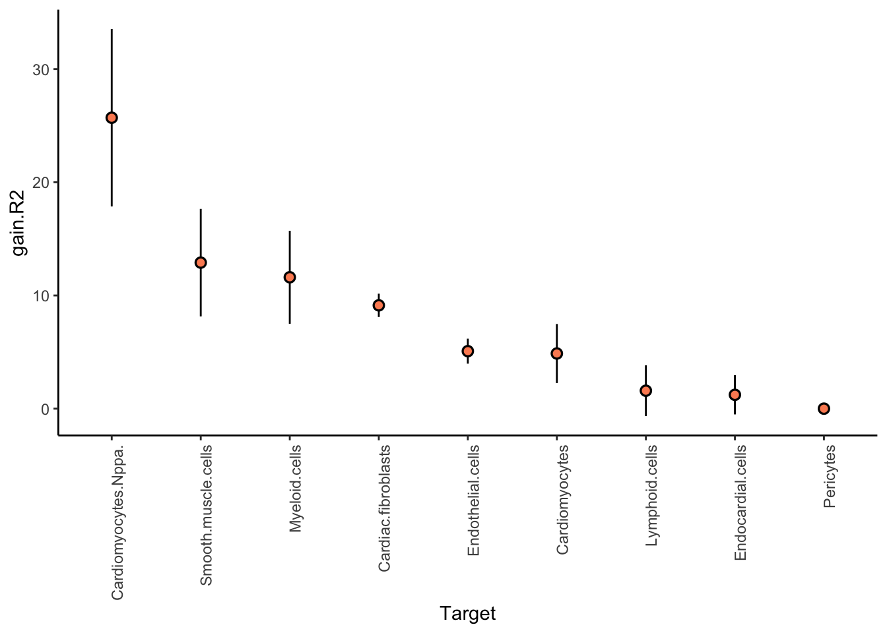
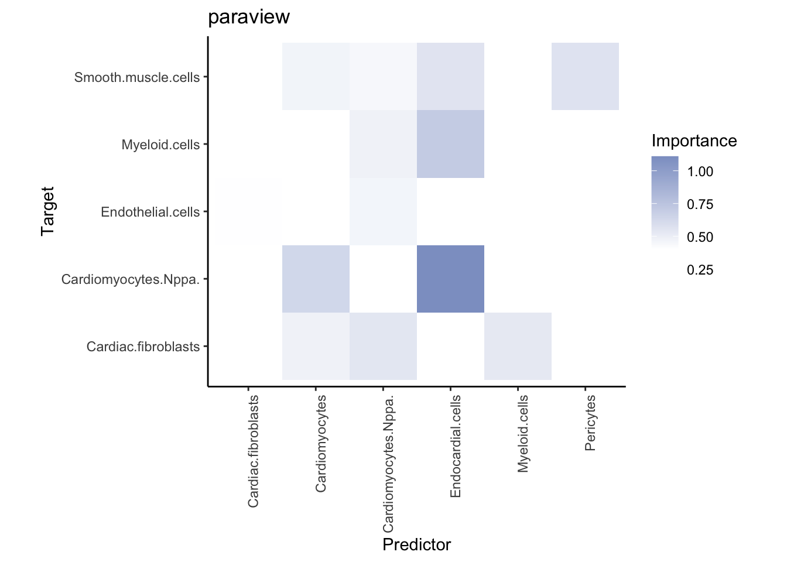
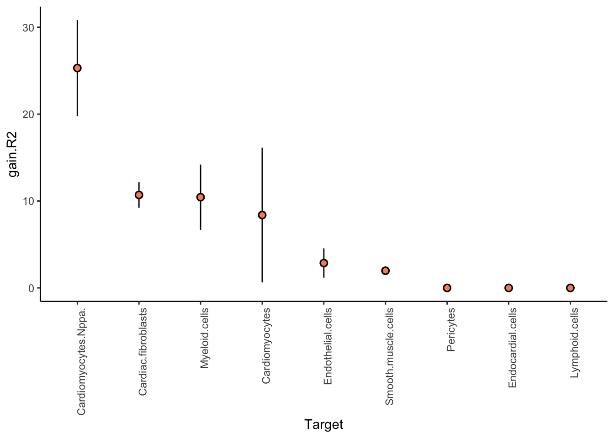
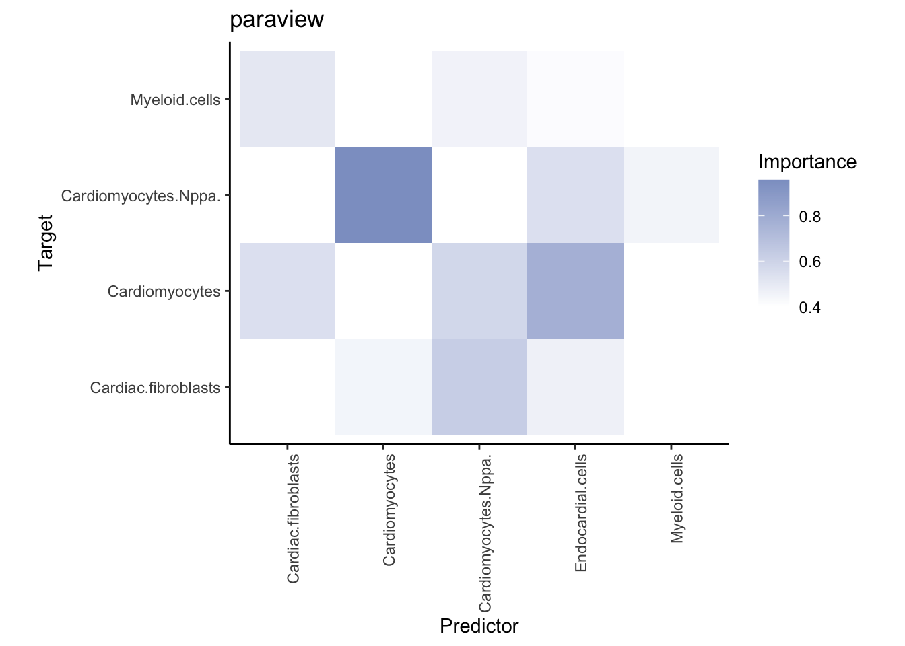
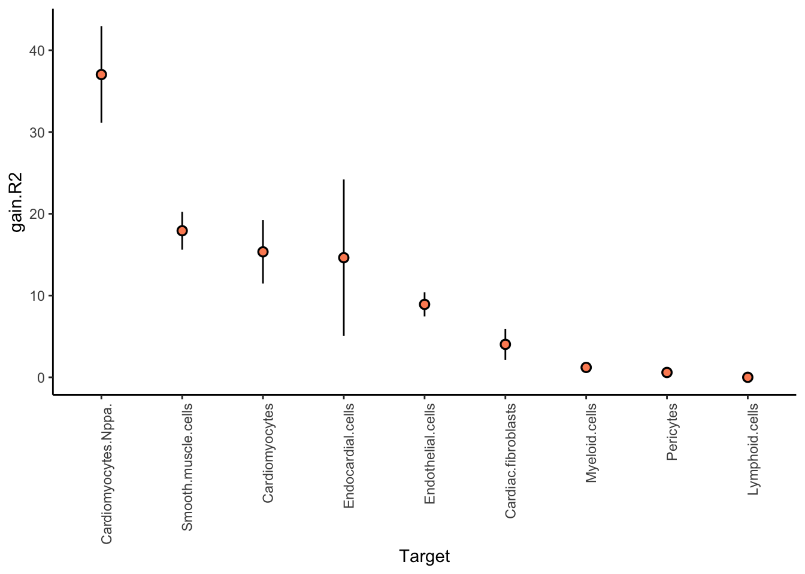
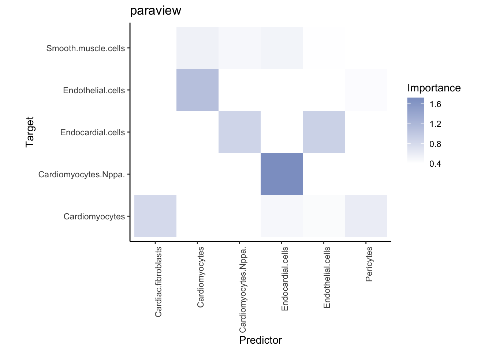
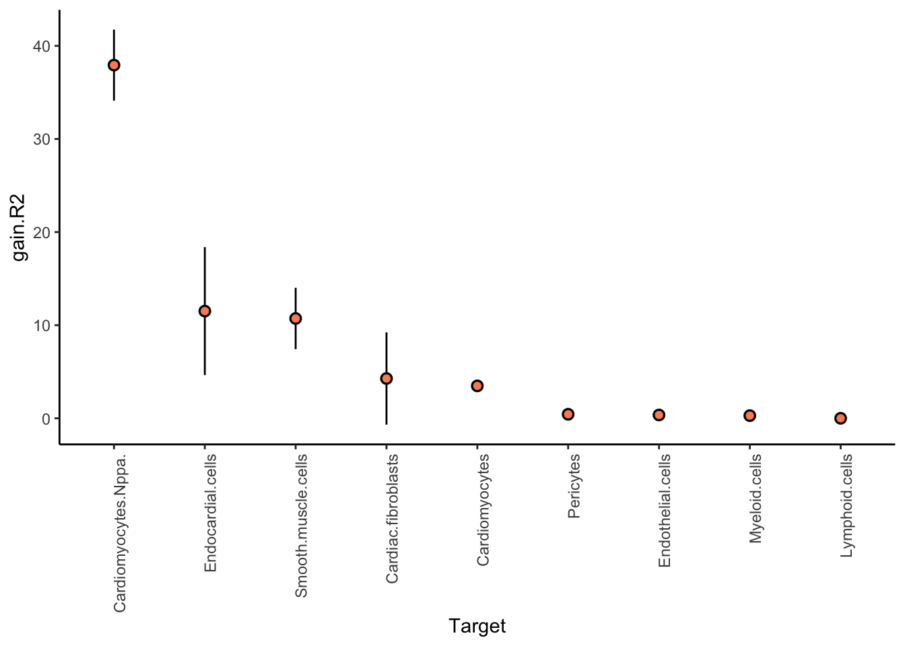
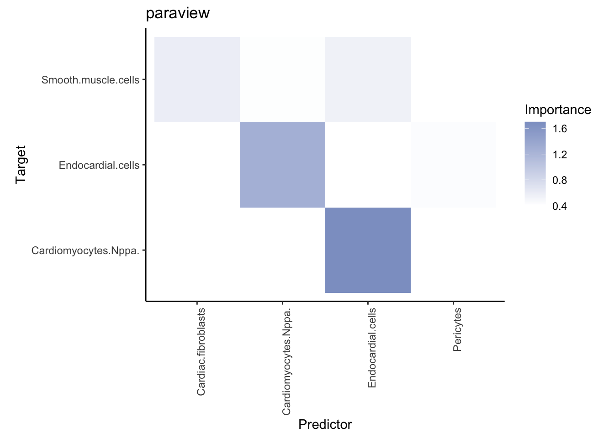

Last updated: 2024-03-21
Checks: 7 0
Knit directory: mi_spatialomics/
This reproducible R Markdown analysis was created with workflowr (version 1.7.1). The Checks tab describes the reproducibility checks that were applied when the results were created. The Past versions tab lists the development history.
Great! Since the R Markdown file has been committed to the Git repository, you know the exact version of the code that produced these results.
Great job! The global environment was empty. Objects defined in the global environment can affect the analysis in your R Markdown file in unknown ways. For reproduciblity it’s best to always run the code in an empty environment.
The command set.seed(20230612) was run prior to running
the code in the R Markdown file. Setting a seed ensures that any results
that rely on randomness, e.g. subsampling or permutations, are
reproducible.
Great job! Recording the operating system, R version, and package versions is critical for reproducibility.
Nice! There were no cached chunks for this analysis, so you can be confident that you successfully produced the results during this run.
Great job! Using relative paths to the files within your workflowr project makes it easier to run your code on other machines.
Great! You are using Git for version control. Tracking code development and connecting the code version to the results is critical for reproducibility.
The results in this page were generated with repository version e6213a5. See the Past versions tab to see a history of the changes made to the R Markdown and HTML files.
Note that you need to be careful to ensure that all relevant files for
the analysis have been committed to Git prior to generating the results
(you can use wflow_publish or
wflow_git_commit). workflowr only checks the R Markdown
file, but you know if there are other scripts or data files that it
depends on. Below is the status of the Git repository when the results
were generated:
Ignored files:
Ignored: .DS_Store
Ignored: .Rproj.user/
Ignored: analysis/.DS_Store
Ignored: analysis/deprecated/.DS_Store
Ignored: analysis/molecular_cartography_python/.DS_Store
Ignored: analysis/seqIF_python/.DS_Store
Ignored: analysis/seqIF_python/pixie/.DS_Store
Ignored: analysis/seqIF_python/pixie/cell_clustering/
Ignored: annotations/.DS_Store
Ignored: annotations/SeqIF/.DS_Store
Ignored: annotations/molkart/.DS_Store
Ignored: annotations/molkart/Figure1_regions/.DS_Store
Ignored: annotations/molkart/Supplementary_Figure4_regions/.DS_Store
Ignored: data/.DS_Store
Ignored: data/140623.calcagno_et_al.seurat_object.rds
Ignored: data/Calcagno2022_int_logNorm_annot.h5Seurat
Ignored: data/IC_03_IF_CCR2_CD68 cell numbers.xlsx
Ignored: data/Traditional_IF_absolute_cell_counts.csv
Ignored: data/Traditional_IF_relative_cell_counts.csv
Ignored: data/pixie.cell_table_size_normalized_cell_labels.csv
Ignored: data/results_cts_100.sqm
Ignored: data/seqIF_regions_annotations/
Ignored: data/seurat/
Ignored: output/.DS_Store
Ignored: output/mol_cart.harmony_object.h5Seurat
Ignored: output/molkart/
Ignored: output/proteomics/
Ignored: output/results_cts.lowres.125.sqm
Ignored: output/seqIF/
Ignored: pipeline_configs/.DS_Store
Ignored: plots/
Ignored: references/.DS_Store
Ignored: renv/.DS_Store
Ignored: renv/library/
Ignored: renv/staging/
Untracked files:
Untracked: analysis/deprecated/figures.supplementary_figureX.Rmd
Untracked: analysis/deprecated/figures.supplementary_figure_X.MistyR.Rmd
Unstaged changes:
Deleted: analysis/figures.supplementary_figureX.Rmd
Deleted: analysis/figures.supplementary_figure_X.MistyR.Rmd
Deleted: analysis/figures.supplementary_figure_X.proteomics_qc.Rmd
Deleted: figures/Figure_5.eps
Deleted: figures/Figure_5.pdf
Deleted: figures/Figure_5.png
Deleted: figures/Figure_5.svg
Deleted: figures/Supplementary_Figure_1_Molecular_Cartography_ROIs.png
Deleted: figures/Supplementary_figure_5.segmentation_metrics.poster.eps
Modified: figures/Supplementary_figure_X.proteomics.eps
Modified: figures/Supplementary_figure_X.proteomics.png
Deleted: results_cts.lowres.125.sqm
Note that any generated files, e.g. HTML, png, CSS, etc., are not included in this status report because it is ok for generated content to have uncommitted changes.
These are the previous versions of the repository in which changes were
made to the R Markdown
(analysis/molkart.misty_analysis.Rmd) and HTML
(docs/molkart.misty_analysis.html) files. If you’ve
configured a remote Git repository (see ?wflow_git_remote),
click on the hyperlinks in the table below to view the files as they
were in that past version.
| File | Version | Author | Date | Message |
|---|---|---|---|---|
| Rmd | e6213a5 | FloWuenne | 2024-03-21 | Publish all updated files. |
| Rmd | 56559c7 | FloWuenne | 2024-03-21 | Cleaned up repository. |
| Rmd | af64c40 | FloWuenne | 2024-01-30 | Updated analysis for Figure 1 and 2. |
| Rmd | 82f107f | FloWuenne | 2024-01-21 | Updates to Molkart analysis. |
| Rmd | f4d5c82 | FloWuenne | 2024-01-15 | Latest update to Seurat analysis with reprocessed data. |
plan(multisession, workers = 8)
## Custom functions
interaction_communities_info <- function(misty.results, concat.views, view,
trim = 0, trim.measure = "gain.R2",
cutoff = 1, resolution = 1) {
inv <- sign((stringr::str_detect(trim.measure, "gain") |
stringr::str_detect(trim.measure, "RMSE", negate = TRUE)) - 0.5)
targets <- misty.results$improvements.stats %>%
dplyr::filter(
measure == trim.measure,
inv * mean >= inv * trim
) %>%
dplyr::pull(target)
view.wide <- misty.results$importances.aggregated %>%
filter(view == !!view) %>%
pivot_wider(
names_from = "Target", values_from = "Importance",
id_cols = -c(view, nsamples)
) %>% mutate(across(-c(Predictor,all_of(targets)), \(x) x = NA))
mistarget <- setdiff(view.wide$Predictor, colnames(view.wide)[-1])
mispred <- setdiff(colnames(view.wide)[-1], view.wide$Predictor)
if(length(mispred) != 0){
view.wide.aug <- view.wide %>% add_row(Predictor = mispred)
} else {
view.wide.aug <- view.wide
}
if(length(mistarget) != 0){
view.wide.aug <- view.wide.aug %>%
bind_cols(mistarget %>%
map_dfc(~tibble(!!.x := NA)))
}
A <- view.wide.aug %>%
column_to_rownames("Predictor") %>%
as.matrix()
A[A < cutoff | is.na(A)] <- 0
## !!! Was buggy
G <- graph.adjacency(A[,rownames(A)], mode = "plus", weighted = TRUE) %>%
set.vertex.attribute("name", value = names(V(.))) %>%
delete.vertices(which(degree(.) == 0))
Gdir <- graph.adjacency(A[,rownames(A)], "directed", weighted = TRUE) %>%
set.vertex.attribute("name", value = names(V(.))) %>%
delete.vertices(which(degree(.) == 0))
C <- cluster_leiden(G, resolution_parameter = resolution, n_iterations = -1)
mem <- membership(C)
Gdir <- set_vertex_attr(Gdir, "community", names(mem), as.numeric(mem))
# careful here the first argument is the predictor and the second the target,
# it might need to come from different view
corrs <- as_edgelist(Gdir) %>% apply(1, \(x) cor(
concat.views[[view]][, x[1]],
concat.views[["intraview"]][, x[2]]
)) %>% replace_na(0)
Gdir <- set_edge_attr(Gdir, "cor", value = corrs)
return(Gdir)
}
cellular_neighborhoods <- function(sample.cells, sample.pos, n, k){
misty.views <- create_initial_view(sample.cells) %>% add_paraview(sample.pos, family = "constant", l = n)
clust <- KMeans_rcpp(misty.views[[paste0("paraview.",n)]], k)
return(clust$clusters)
}In this markdown we will utilize MistyR to perform global spatial analysis on the cell-type encodings for the Molecular Cartography data.
Make sure to have the latest development version (15.01.2024) : https://github.com/jtanevski/mistyR
size_param <- 125
all.data <- read_tsv("./output/molkart/molkart.misty_celltype_table.lowres.tsv")Rows: 69028 Columns: 12
── Column specification ────────────────────────────────────────────────────────
Delimiter: "\t"
chr (8): sample_ID, timepoint, replicate, anno_cell_type_lvl1, anno_cell_typ...
dbl (4): X_centroid, Y_centroid, Area, nCount_RNA
ℹ Use `spec()` to retrieve the full column specification for this data.
ℹ Specify the column types or set `show_col_types = FALSE` to quiet this message.samples <- all.data %>%
pull(sample_ID) %>%
unique()
cts <- all.data %>%
pull(misty_cts) %>%
unique()
cts.names <- make.names(cts, allow_ = FALSE)
## Count number of cells per type
# ct_numbers <- all.data %>%
# group_by(sample_ID, misty_cts) %>%
# summarise(n = n()) %>%
# pivot_wider(names_from = misty_cts, values_from = n) %>%
# column_to_rownames("sample_ID") %>%
# as.matrix()
samples %>% walk(\(sample){
sample.cells <- all.data %>%
filter(sample_ID == sample) %>%
pull(misty_cts) %>%
map(~ .x == cts) %>%
list.rbind() %>%
`colnames<-`(cts.names) %>%
as_tibble()
sample.pos <- all.data %>%
filter(sample_ID == sample) %>%
select(X_centroid, Y_centroid)
l <- size_param / 0.138
misty.views.cts <- create_initial_view(sample.cells) %>%
add_paraview(sample.pos, l) %>%
rename_view(paste0("paraview.", l), "paraview") %>%
select_markers("intraview", where(~ sd(.) != 0))
db_name <- paste("results_cts.lowres.",size_param,".sqm",sep="")
run_misty(misty.views.cts, sample, db_name, bypass.intra = TRUE)
})
Generating paraview
Training modelsWarning in ...furrr_fn(...): Negative performance detected and replaced with 0
for target Myeloid.cellsWarning in ...furrr_fn(...): Negative performance detected and replaced with 0
for target Cardiac.fibroblastsWarning in ...furrr_fn(...): Negative performance detected and replaced with 0
for target PericytesWarning in ...furrr_fn(...): Negative performance detected and replaced with 0
for target Endothelial.cellsWarning in ...furrr_fn(...): Negative performance detected and replaced with 0
for target CardiomyocytesWarning in ...furrr_fn(...): Negative performance detected and replaced with 0
for target Smooth.muscle.cellsWarning in ...furrr_fn(...): Negative performance detected and replaced with 0
for target Cardiomyocytes.Nppa.Warning in ...furrr_fn(...): Negative performance detected and replaced with 0
for target Endocardial.cellsWarning in ...furrr_fn(...): Negative performance detected and replaced with 0
for target Lymphoid.cells
Generating paraview
Training modelsWarning in ...furrr_fn(...): Negative performance detected and replaced with 0
for target Myeloid.cellsWarning in ...furrr_fn(...): Negative performance detected and replaced with 0
for target Cardiac.fibroblastsWarning in ...furrr_fn(...): Negative performance detected and replaced with 0
for target PericytesWarning in ...furrr_fn(...): Negative performance detected and replaced with 0
for target Endothelial.cellsWarning in ...furrr_fn(...): Negative performance detected and replaced with 0
for target CardiomyocytesWarning in ...furrr_fn(...): Negative performance detected and replaced with 0
for target Smooth.muscle.cellsWarning in ...furrr_fn(...): Negative performance detected and replaced with 0
for target Cardiomyocytes.Nppa.Warning in ...furrr_fn(...): Negative performance detected and replaced with 0
for target Endocardial.cellsWarning in ...furrr_fn(...): Negative performance detected and replaced with 0
for target Lymphoid.cells
Generating paraview
Training modelsWarning in ...furrr_fn(...): Negative performance detected and replaced with 0
for target Myeloid.cellsWarning in ...furrr_fn(...): Negative performance detected and replaced with 0
for target Cardiac.fibroblastsWarning in ...furrr_fn(...): Negative performance detected and replaced with 0
for target PericytesWarning in ...furrr_fn(...): Negative performance detected and replaced with 0
for target Endothelial.cellsWarning in ...furrr_fn(...): Negative performance detected and replaced with 0
for target CardiomyocytesWarning in ...furrr_fn(...): Negative performance detected and replaced with 0
for target Smooth.muscle.cellsWarning in ...furrr_fn(...): Negative performance detected and replaced with 0
for target Cardiomyocytes.Nppa.Warning in ...furrr_fn(...): Negative performance detected and replaced with 0
for target Endocardial.cellsWarning in predict.lm(meta.multi, oob.predictions %>% dplyr::slice(test.fold)):
prediction from rank-deficient fit; attr(*, "non-estim") has doubtful casesWarning in ...furrr_fn(...): Negative performance detected and replaced with 0
for target Lymphoid.cells
Generating paraview
Training modelsWarning in ...furrr_fn(...): Negative performance detected and replaced with 0
for target Myeloid.cellsWarning in ...furrr_fn(...): Negative performance detected and replaced with 0
for target Cardiac.fibroblastsWarning in ...furrr_fn(...): Negative performance detected and replaced with 0
for target PericytesWarning in ...furrr_fn(...): Negative performance detected and replaced with 0
for target Endothelial.cellsWarning in ...furrr_fn(...): Negative performance detected and replaced with 0
for target CardiomyocytesWarning in ...furrr_fn(...): Negative performance detected and replaced with 0
for target Smooth.muscle.cellsWarning in ...furrr_fn(...): Negative performance detected and replaced with 0
for target Cardiomyocytes.Nppa.Warning in ...furrr_fn(...): Negative performance detected and replaced with 0
for target Endocardial.cellsWarning in ...furrr_fn(...): Negative performance detected and replaced with 0
for target Lymphoid.cells
Generating paraview
Training modelsWarning in ...furrr_fn(...): Negative performance detected and replaced with 0
for target Myeloid.cellsWarning in ...furrr_fn(...): Negative performance detected and replaced with 0
for target Cardiac.fibroblastsWarning in ...furrr_fn(...): Negative performance detected and replaced with 0
for target PericytesWarning in ...furrr_fn(...): Negative performance detected and replaced with 0
for target Endothelial.cellsWarning in ...furrr_fn(...): Negative performance detected and replaced with 0
for target CardiomyocytesWarning in ...furrr_fn(...): Negative performance detected and replaced with 0
for target Smooth.muscle.cellsWarning in ...furrr_fn(...): Negative performance detected and replaced with 0
for target Cardiomyocytes.Nppa.Warning in ...furrr_fn(...): Negative performance detected and replaced with 0
for target Endocardial.cellsWarning in ...furrr_fn(...): Negative performance detected and replaced with 0
for target Lymphoid.cells
Generating paraview
Training modelsWarning in ...furrr_fn(...): Negative performance detected and replaced with 0
for target Myeloid.cellsWarning in ...furrr_fn(...): Negative performance detected and replaced with 0
for target Cardiac.fibroblastsWarning in ...furrr_fn(...): Negative performance detected and replaced with 0
for target PericytesWarning in ...furrr_fn(...): Negative performance detected and replaced with 0
for target Endothelial.cellsWarning in ...furrr_fn(...): Negative performance detected and replaced with 0
for target CardiomyocytesWarning in ...furrr_fn(...): Negative performance detected and replaced with 0
for target Smooth.muscle.cellsWarning in ...furrr_fn(...): Negative performance detected and replaced with 0
for target Cardiomyocytes.Nppa.Warning in ...furrr_fn(...): Negative performance detected and replaced with 0
for target Endocardial.cellsWarning in ...furrr_fn(...): Negative performance detected and replaced with 0
for target Lymphoid.cells
Generating paraview
Training modelsWarning in ...furrr_fn(...): Negative performance detected and replaced with 0
for target Myeloid.cellsWarning in ...furrr_fn(...): Negative performance detected and replaced with 0
for target Cardiac.fibroblastsWarning in ...furrr_fn(...): Negative performance detected and replaced with 0
for target PericytesWarning in ...furrr_fn(...): Negative performance detected and replaced with 0
for target Endothelial.cellsWarning in ...furrr_fn(...): Negative performance detected and replaced with 0
for target CardiomyocytesWarning in ...furrr_fn(...): Negative performance detected and replaced with 0
for target Smooth.muscle.cellsWarning in ...furrr_fn(...): Negative performance detected and replaced with 0
for target Cardiomyocytes.Nppa.Warning in ...furrr_fn(...): Negative performance detected and replaced with 0
for target Endocardial.cellsWarning in ...furrr_fn(...): Negative performance detected and replaced with 0
for target Lymphoid.cells
Generating paraview
Training modelsWarning in ...furrr_fn(...): Negative performance detected and replaced with 0
for target Myeloid.cellsWarning in ...furrr_fn(...): Negative performance detected and replaced with 0
for target Cardiac.fibroblastsWarning in ...furrr_fn(...): Negative performance detected and replaced with 0
for target PericytesWarning in ...furrr_fn(...): Negative performance detected and replaced with 0
for target Endothelial.cellsWarning in ...furrr_fn(...): Negative performance detected and replaced with 0
for target CardiomyocytesWarning in ...furrr_fn(...): Negative performance detected and replaced with 0
for target Smooth.muscle.cellsWarning in ...furrr_fn(...): Negative performance detected and replaced with 0
for target Cardiomyocytes.Nppa.Warning in ...furrr_fn(...): Negative performance detected and replaced with 0
for target Endocardial.cellsWarning in ...furrr_fn(...): Negative performance detected and replaced with 0
for target Lymphoid.cellsl <- size_param / 0.138
db_name <- paste("results_cts.lowres.",size_param,".sqm",sep="")
groups <- samples %>% str_extract("(?<=sample_).+(?=_r)") %>% unique()
misty.results.g <- groups %>% map(~ collect_results(db_name, .x))
Collecting improvements
Collecting contributions
Collecting importances
Aggregating
Collecting improvements
Collecting contributions
Collecting importances
Aggregating
Collecting improvements
Collecting contributions
Collecting importances
Aggregating
Collecting improvements
Collecting contributions
Collecting importances
Aggregating#misty.results.g <- groups %>% map(~ collect_results(paste("results_cts_",as.character(size_param),".sqm",sep=""), .x,)) ##
names(misty.results.g) <- groups
outdir <- paste("./plots/misty_figures",sep="")
misty.results.g %>% iwalk(\(misty.results, cond){
plot.list <- list()
plot_improvement_stats(misty.results, "gain.R2")
plot.list <- list.append(plot.list, last_plot())
plot_interaction_heatmap(misty.results, "paraview", cutoff = 0.4, clean = TRUE, trim = 5)
plot.list <- list.append(plot.list, last_plot())
plot_grid(plotlist = plot.list, ncol = 2)
ggsave(paste0(outdir,"/", cond, "_stats.pdf"), width = 10, height = 10)
})
## Save misty results in R object for easier faster loading
saveRDS(misty.results.g,
file = paste0("./output/molkart/misty_results.lowres.",size_param,".rds"))
sessionInfo()R version 4.3.1 (2023-06-16)
Platform: aarch64-apple-darwin20 (64-bit)
Running under: macOS Sonoma 14.1.2
Matrix products: default
BLAS: /Library/Frameworks/R.framework/Versions/4.3-arm64/Resources/lib/libRblas.0.dylib
LAPACK: /Library/Frameworks/R.framework/Versions/4.3-arm64/Resources/lib/libRlapack.dylib; LAPACK version 3.11.0
locale:
[1] en_US.UTF-8/en_US.UTF-8/en_US.UTF-8/C/en_US.UTF-8/en_US.UTF-8
time zone: Europe/Berlin
tzcode source: internal
attached base packages:
[1] stats graphics grDevices datasets utils methods base
other attached packages:
[1] RColorBrewer_1.1-3 here_1.0.1 ggsci_3.0.0 viridis_0.6.4
[5] viridisLite_0.4.2 ClusterR_1.3.2 igraph_1.6.0 cowplot_1.1.2
[9] future_1.33.1 FNN_1.1.4 rlist_0.4.6.2 mistyR_1.99.9
[13] lubridate_1.9.3 forcats_1.0.0 stringr_1.5.1 dplyr_1.1.4
[17] purrr_1.0.2 readr_2.1.5 tidyr_1.3.0 tibble_3.2.1
[21] ggplot2_3.4.4 tidyverse_2.0.0 workflowr_1.7.1
loaded via a namespace (and not attached):
[1] tidyselect_1.2.0 farver_2.1.1 blob_1.2.4
[4] filelock_1.0.3 R.utils_2.12.3 fastmap_1.1.1
[7] promises_1.2.1 digest_0.6.34 timechange_0.2.0
[10] lifecycle_1.0.4 processx_3.8.3 RSQLite_2.3.4
[13] magrittr_2.0.3 compiler_4.3.1 rlang_1.1.3
[16] sass_0.4.8 tools_4.3.1 utf8_1.2.4
[19] yaml_2.3.8 data.table_1.14.10 knitr_1.45
[22] labeling_0.4.3 bit_4.0.5 withr_2.5.2
[25] R.oo_1.25.0 grid_4.3.1 fansi_1.0.6
[28] git2r_0.33.0 colorspace_2.1-0 globals_0.16.2
[31] scales_1.3.0 cli_3.6.2 rmarkdown_2.25
[34] crayon_1.5.2 ragg_1.2.7 generics_0.1.3
[37] rstudioapi_0.15.0 httr_1.4.7 tzdb_0.4.0
[40] DBI_1.2.0 cachem_1.0.8 assertthat_0.2.1
[43] parallel_4.3.1 BiocManager_1.30.22 vctrs_0.6.5
[46] jsonlite_1.8.8 callr_3.7.3 hms_1.1.3
[49] distances_0.1.10 bit64_4.0.5 listenv_0.9.0
[52] systemfonts_1.0.5 jquerylib_0.1.4 glue_1.7.0
[55] parallelly_1.36.0 codetools_0.2-19 ps_1.7.6
[58] stringi_1.8.3 gtable_0.3.4 later_1.3.2
[61] gmp_0.7-4 munsell_0.5.0 pillar_1.9.0
[64] furrr_0.3.1 htmltools_0.5.7 R6_2.5.1
[67] textshaping_0.3.7 rprojroot_2.0.4 vroom_1.6.5
[70] evaluate_0.23 highr_0.10 R.methodsS3_1.8.2
[73] memoise_2.0.1 renv_1.0.3 httpuv_1.6.14
[76] bslib_0.6.1 Rcpp_1.0.12 gridExtra_2.3
[79] whisker_0.4.1 xfun_0.41 fs_1.6.3
[82] getPass_0.2-4 pkgconfig_2.0.3